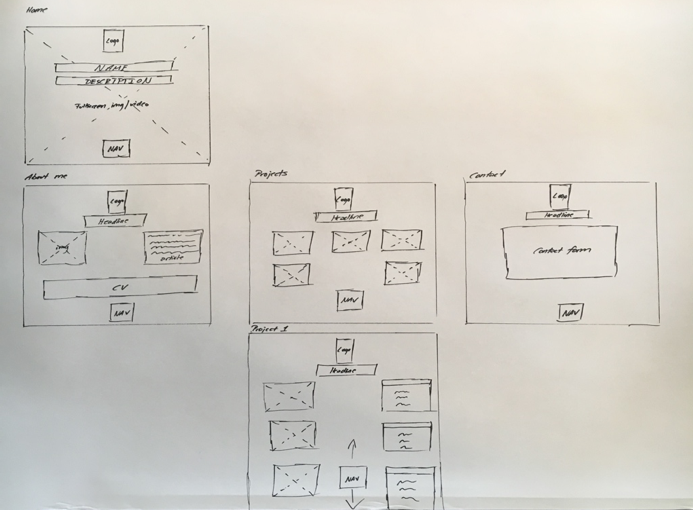
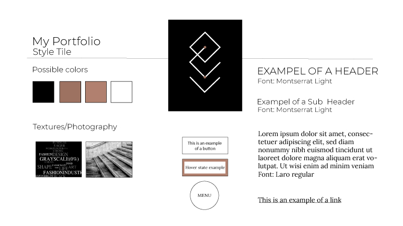
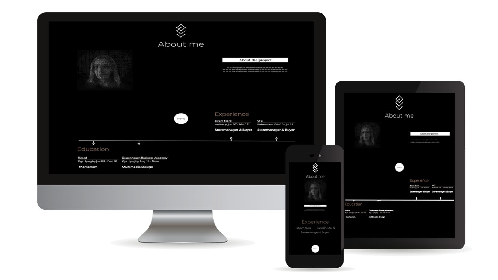
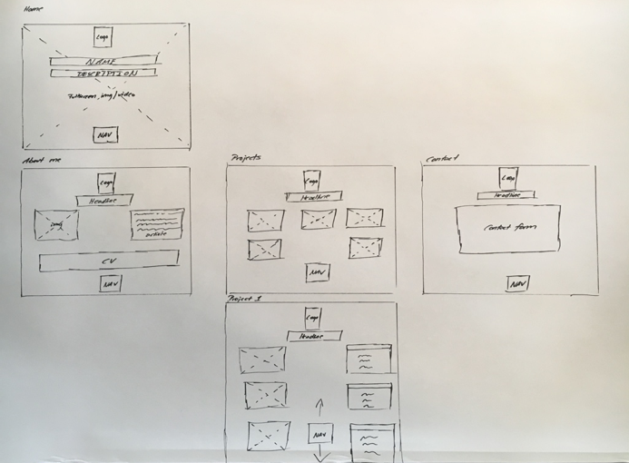
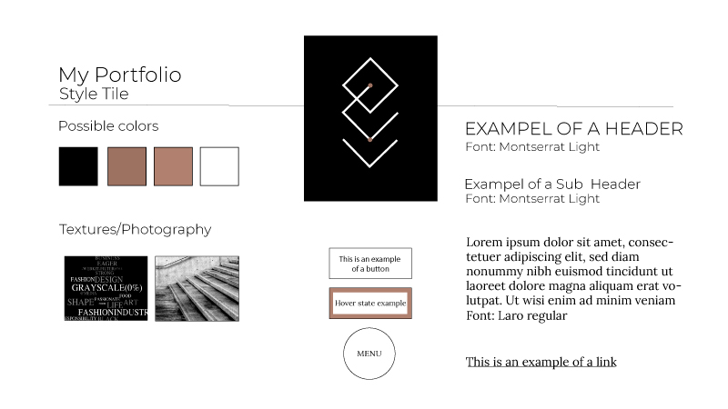
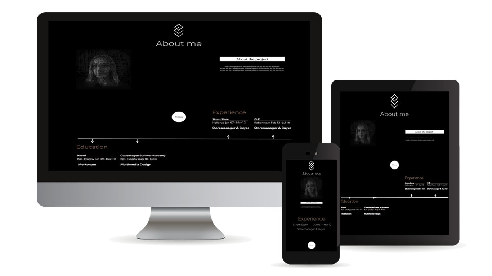

  
   We had to remake our portfolio and use all the things we had learned in the 1th semester. We should also reflect on our previous assignments, and make a redesign on all projects, where needed.
See full project descriptionWebsite design, project planning, HTML, CSS, Photoshop, Illustrator, prototyping
This entire site is the solution of my exam project. I have made it responsive due to media queries. I used Photoshop to adjust images for the site, create my profilepicture, make an animated frontpage image, and Illustrator to create my personalized logo and my resumé-timeline. I began the project making a PBS and WBS in order to get all of the tasks structured. The timeline was not followed completely, since unexpected problems occurred during the way. But I ended up, working a lot of late nights, and the result was almost as planned for.
See full reportThe work in redesigning previous projects, has made me able to see my progress during the first semester in school. I can now look back at the projects and have a new way of looking at the possible solutions. A great example is my portfolio. From the time when the assignment ‘Dream your portfolio’, was presented a lot has happened with my mindset. Where my first approach was more into what would look nice, I now look at it from a bigger perspective. Not only does it have to look nice, it needs to keep the user inspired into exploring my site and creating action from the user’s point of view. From ‘build your portfolio’, I learned that the project structure has to be very determined in order to accomplish your goal. Project planning and structure has to be in place, before you can start developing the actual website. In this portfolio, the coding was the last thing for me to plunge into. All of the information architecture had to be in place, as well as the content. The design and objects to be used, had to be determined beforehand. It was also necessary to use PBS and WBS in order to avoid scope creeping during the project, which could cause me not reaching my goal for the assignment. All of these aspects and workflows are something I have learned during the first semester, which has been very important in order for me to handle projects most efficiently. I am still to figure out using Javascript, but I look forward to mastering it after next semester.